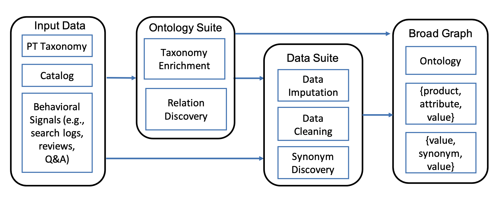
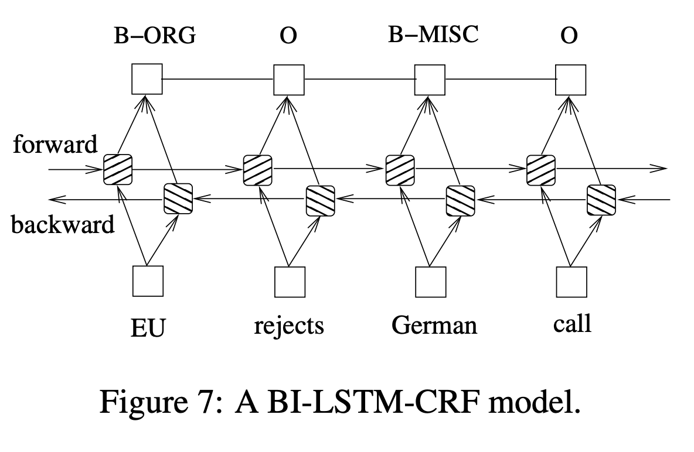

Why this paper?
Product discovery plays a pivotal role in the success of an online store, as it not only fuels revenue generation but also exerts a profound influence on the overall customer experience. In the vast landscape of e-commerce, where countless products are bought and sold through platforms like Amazon, the task of efficiently arranging and presenting product information for indexing and seamless search functionality stands as a continuous and formidable challenge.
Another challenge arises due to the lack of a unified language in product descriptions. Given that retailers curate the information, the distinct characteristics and attributes of products are predominantly delineated within titles or descriptions, rather than being uniformly collected. Consequently, the extraction of this information necessitates delving into unstructured textual data.
Researchers at Amazon address this issue by introducing a pipeline named AUTOKNOW. This pipeline comprises a set of machine learning algorithms and techniques that create taxonomy, recognize products, and ultimately construct a product knowledge graph. This graph serves the purpose of organizing catalog information and enhancing product discovery through indexing and downstream functionalities of search and product recommendation.
Summary of techniques

This paper delves into the intricacies of the Retail Product Domain, where challenges compound due to the rapid influx of new products and the extensive range of associated attributes, such as color that can have many values. This domain presents a diverse spectrum of attributes spanning various product types, even as some attributes are shared among products. To address the inherent complexity, the study narrows its focus to four domains: grocery, health, beauty, and baby. Eligible products for the study must have at least one monthly page view. It is observed that products are characterized by dozens to hundreds of attributes per product, with the attribute count varying from 100 to 250 across different product types.
They start organizing the product taxonomy by focusing on types and hypernyms relationships, and curating attributes and synonyms for each type. They also focus on a knowledge graph (KG) that consists of triples in the form of (subject, predicate, object), where subjects are entities with IDs belonging to various types, objects can be entities or atomic values, and predicates signify relationships. This study concentrates on broad graphs where the topic type is products. Product types are organized hierarchically, forming a taxonomy. The paper assumes input sources, including a product catalog with attributes and customer behavior logs, query/purchase logs, customer reviews and question/answer. Intuitively, most product types appear in title, and search queries.
The taxonomy enrichment process consists of two steps. Firstly, a type extractor is trained to identify new product types from titles and queries, utilizing an open-world tagging model. Secondly, type attachment is achieved through a binary classification task, employing a graph neural network (GNN) module that captures signals from customer behaviors. This GNN-based approach refines type representations and combines them with semantic features for classification. Distant supervision is applied for model training, utilizing existing taxonomy and customer behavior data for positive and negative labels.
The Data Imputation component addresses the Structure-sparsity challenge by enhancing coverage through structured value extraction from product profiles. This process involves extracting new (attribute, value) pairs for each product from its profiles. State-of-the-art techniques using BIOE sequential labeling and active learning have been effective for solving this at the type-attribute level, as demonstrated in Equation (1) with BiLSTM and CRF.
\[(y_{1},y_{2},...y_{L}) = \text{CRF}(\text{BiLSTM}(e_{x_{1}},e_{x_{2}},...,e_{x_{L}}))\]
However, scalability to handle large numbers of product types and attributes is an issue. To overcome this, the paper introduces a novel taxonomy-aware sequence tagging approach conditioned on product type. The model’s predictions are influenced by the product type’s pre-trained hyperbolic-space embedding, preserving hierarchical relationships within the taxonomy. The approach also employs multi-task learning to enhance the identification of tokens indicating product type and tackle catalog misclassification or missing type information through shared BiLSTM training for sequence tagging and product categorization.
Next step is the relation discovery which is based on product attributes where various sets of attributes apply to different product types, and only a fraction significantly affects shopping decisions. Identifying applicable and important attributes for thousands of types is essential. Formally, the task involves determining if an attribute applies to a product type and its importance for purchasing decisions. This paper employs classification and regression models—specifically, Random Forest—to assess attribute applicability and importance. The models utilize seller behavior (attribute value coverage and frequency in profiles) and buyer behavior (frequency in search queries, reviews, Q&A). Annotations from in-house and MTurk sources are used for model training. The approach distinguishes between subtle differences, such as attributes required for coverage but not always pivotal for decisions. The trained models are applied to all attribute-type pairs for decision-making.
This model is designed to figure out if a suggested attribute value matches the context provided by product descriptions and the product categories they belong to. The model takes raw input, which is a combination of words from product descriptions, product categories, and the suggested attribute value. These words are turned into embedding vectors that capture their meaning, source, and position in the text. The model then processes these embeddings using a multi-layer transformer to create a representation that summarizes all this information. This summarized representation is used to calculate a score, which tells us how well the suggested attribute value fits in with the context. To train the model, they use examples from the product catalog. They generate both correct and incorrect examples, and the model learns to distinguish between them. During testing, the model is applied to different attribute-value pairs, and those with low scores are considered as incorrect matches.
Final Points
At the time of this paper presentation, Autoknow is deployed in production in collecting over 1B product knowledge facts for over 11K distinct product types. The approach is validated by demonstrating the expansion of existing Amazon ontology by 2.9 times where precision is improved by 7.6% and recall by 16.4%. The collection suite of technologies are Apache spark distributed system, tensorflow for deep learning, amazon deep graph library for graph neural network for taxonomy. The relationships are derived using Spark ML, and an AWS SageMaker instance is used for training the imputation component.
Finally, they mention an important lesson, which is that sometimes they need to move away from the product tree and consider multiple parents. In other words, a single sub-type cannot be clearly defined in many instances.
Discussion
First, Saina gave us a great introduction about the problem domain, knowledge discovery. She said extracting and understanding attributes is essential in knowledge discovery in retail, which has been relatively easy before the era online shopping because merchants usually provided well-organized product catalogs. However, widely variable free text formats started emerging with the rise of e-commerce. Search engines have been trying to automatically extract attributes from the text input and to build a good taxonomy to create hierarchical relationship between products. Since products come and go constantly, this process requires interactive process of attribute extraction and taxonomy building. As the authors mentioned in the paper, some of the main challenges are to clean, curate, and understand the data, and to correct errors and prevent abuse of attributes.
We spent a lot of time trying to understand the sequential labeling problem the paper used extensively. The authors frequently cited their OpenTag paper, which they used to automatically generate training labels. These tags are used in many stages of their model pipeline including taxonomy enrichment and type attachment. The algorithm takes a sequence of text tokens and return a sequence of BIOE (“beginning”, “inside”, “outside”, “end”) labels. Then the authors used the returned tags as true labels for subsequent ML algorithms (distant supervision and regular supervision). We initially thought this BIOE labeling system came from the OpenTag paper but we later learned that it was based on a 2015 paper about bidirectional LSTM-CRT (conditional random field) for sequential tagging, which the authors used in this paper as well. In short, the final CRF layer in this deep learning model returns a probability for every plausible label sequences (sequence likelihood). We thought it would have been nice for the authors to give a quick overview of the algorithm and address potential risk of ML-generated labels as true labels in downstream ML modeling.

We also discussed other algorithms used in the paper to improve our understanding. First, we suspected that the regression problem they attempted to solve was based on MTurk workers’ subjective level of attribute importance (not a feature importance of an ML model) even though we doubted the choice of using only 6 MTurk workers. We also discussed the difference between semi-supervised and weak-supervised learning models: the former is about “based on what is already labeled, label some more” and the latter is about “based on your knowledge, label some more”. Finally, we talked about hyperbolic space embedding, which is excellent at preserving graph distances and complex relationships in very few dimensions Finally, as the authors mentioned at the end, we thought it would make sense to have a single model that takes care of data imputation and cleaning because in this paper, the cleaning is more of correction in imputed values.
We generally enjoyed reading this paper because it uses a plethora of various ML algorithms extensively, which gave us a good opportunity to get to know them. However, some of us questioned how this model pipeline can be maintained especially with the arrival of new information. We thought some stages of the pipeline might be more resilient to changes (such as the attribute importance estimation) but taxonomy changes may not. As we’ve seen in deep learning papers many times, we also questioned the validation aspect because the number of samples used in validation (a few hundreds triples) was much smaller than the actual dataset (one billion triples).